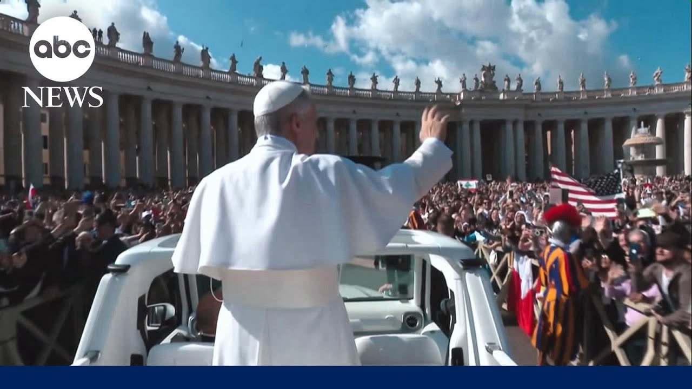

【芝加哥本地人在梵蒂冈创造历史】
Summary: Finally tonight, a Chicago native made history at the Vatican, and ABC's Maggie Roelly was there to witness it.
摘要： 今晚，一位芝加哥本地人在梵蒂冈创造了历史，ABC的Maggie Roelly现场见证了这一刻。

⏱️ Estimated Reading Time: 2 min
Tonight, the world celebrates the American Pope.
今晚，全世界都在庆祝这位美国教皇。
More than 200,000 crowding around St. Peter Square to mark the official start of Pope Leo the 14th's papacy.
超过20万人聚集在圣彼得广场，标志着教皇利奥十四世任期的正式开始。
On a day of both elation and deep emotion, the mass rich in tradition.
这一天充满喜悦与深情，弥撒仪式传统而隆重。
Pope Leo praying before the tomb of St. Peter before receiving the symbols of the papacy, the palium, a woolen vestment worn over his shoulders, and the fisherman's ring, a signate ring bearing the image of St. Peter.
教皇利奥在圣彼得墓前祈祷，随后接受了教皇象征——披肩（一种羊毛肩衣）和渔人权戒（一枚刻有圣彼得像的戒指）。
A moment that resonated with emotion for the new pope.
这一刻让新教皇深受感动。
It must be an awesome thing to look at that ring and see your connection to St. Peter.
看着那枚戒指，感受到与圣彼得的联系，一定是件无比震撼的事。
At one point, the Pope mobile stopping for Pope Leo to hold and bless babies in the crowd.
途中，教皇专车停下，让教皇利奥拥抱并祝福人群中的婴儿。
Jerry Spearman knew Pope Leo from his time at Villanova.
Jerry Spearman在维拉诺瓦时期就认识教皇利奥。
A man who was and is very personal to me and so many of my former Augustinian confrs um is is now a gift to to the world.
他曾是、现在也是我和许多前奥古斯丁会弟兄非常亲近的人，如今他成为了全世界的礼物。
Not only the church, but to the world.
不仅是教会的礼物，更是全世界的礼物。
And Lindsay, after his history making mass, this moment, Pope Leo breaking protocol to hug his brother Louie from Florida.
Lindsay，在创造历史的弥撒后，教皇利奥打破惯例，拥抱了来自佛罗里达的兄弟Louie。
And Lindsay, we have seen how Pope Leo is connecting with just every American we meet here on the ground.
Lindsay，我们亲眼见证了教皇利奥如何与这里遇到的每一位美国人建立联系。
And now he'll be the holy father to 1.4 billion Catholics around the world.
现在，他将成为全球14亿天主教徒的圣父。
Lindsay, what a touching moment.
Lindsay，多么感人的一刻。
Maggie, thank you.
Maggie，谢谢你。
And thank you so much for watching.
非常感谢大家的观看。
David Mir right back here tomorrow.
David Mir明天还会在这里。
I'm Lindsay Davis.
我是Lindsay Davis。
Have a great night.
祝大家晚安。